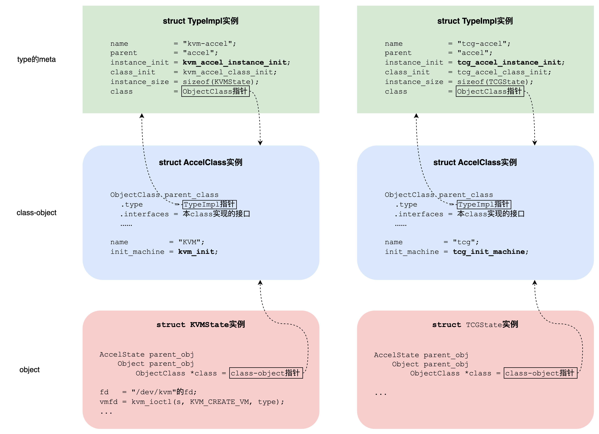
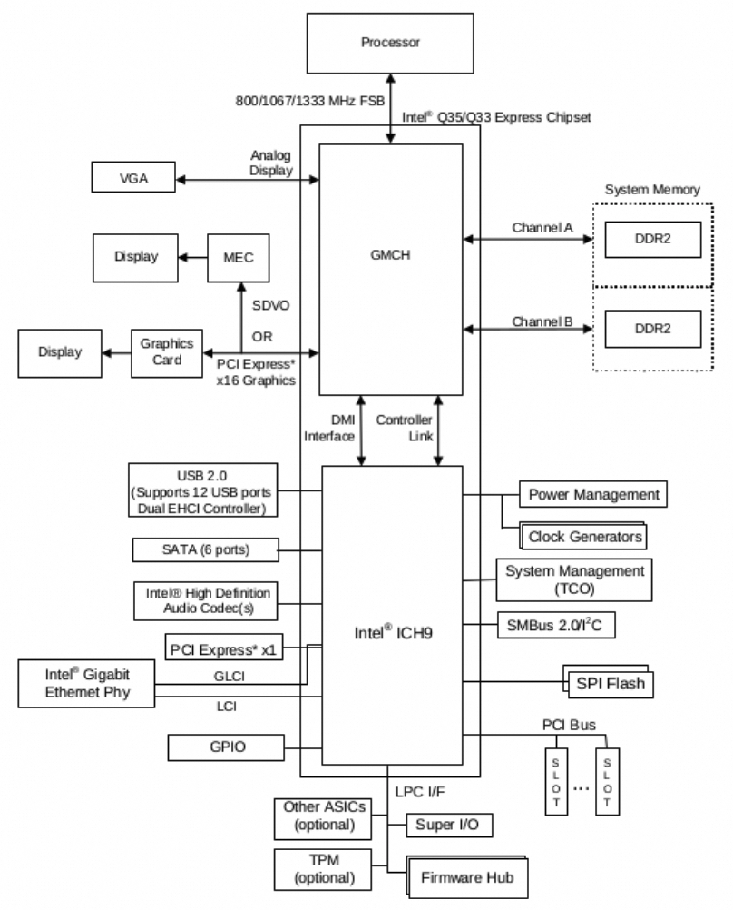

本文介绍qemu(version 7.2.12)的QOM (Qemu Object Model)，以及基于QOM实现的Accelerator和MachineClass，为VM的创建和初始化做准备。
Qemu对象模型QOM (1) Qemu是C语言编写的，所以手动实现了类似于C++的面向对象机制，也就是QOM (QEMU Object Model)。有了它，开发者可以注册class，然后创建class的实例。简单地说，QOM是这样实现的：
一切皆对象，有点类似于python；
也就是说class本身也是一个对象，即class-object；其中保存着父类的实例(通过组合实现继承), class的name, 以及class的函数指针(相当于成员函数)。
TypeImpl描述一个class，包括:
父类指针TypeImpl *parent_type;
class-object的size (class_size)，以及初始化class-object的函数指针(class_init)；有了这两者就可以创建并初始化class-object；若没设置则继承父类parent_type的；
object的size (instance_size)，以及初始化object的函数指针(instance_init)；有了这两者就可以创建并初始化object(相当于object的构造函数)；若没设置则继承父类parent_type的；
本class的singleton的class-object(ObjectClass *class)；
所以TypeImpl相当于class的meta；注册class时会创建一个TypeImpl实例并保存到全局表type_table中。但这个时候singleton的class-object没有创建(ObjectClass *class为NULL)，更别提任何object了；
class-object是lazily created的：创建函数是type_initialize()。若TypeImpl实例(meta)的ObjectClass *class为NULL，则分配一个class-object，size为class_size，然后调用class_init来初始化它；
创建object：大小为instance_size，初始化函数为instance_init。有多个函数可以选择：
object_initialize(..., const char* typename): 输入字符串类型的typename。根据typename从全局表type_table查找meta (TypeImpl实例)，调用type_initialize()来lazily create class-object，然后初始化object。object_new_with_type(): 输入meta (TypeImpl实例)。调用type_initialize()来lazily create class-object，然后分配并初始化object。
如何使用QOM见The QEMU Object Model 。
Accelerators (2) Qemu支持不同类型的accelerators: KVM, TCG等；它们都是QOM中的类，有各自的class-object，可以创建多个object。被创建的object是KVMState实例, TCGState实例。这些实例是VM (Virtual Machine)的被加速的组件。对于KVM来说，被加速的组件是CPU和内存，是VM的主机，其它都是外围设备(peripheral devices)。所以从这个角度说，KVMState就是VM本身，至少KVM语义中是这么认为的：KVMState.vmfd = kvm_ioctl(s, KVM_CREATE_VM, type)；也就是说，在KVM语义中，KVM_CREATE_VM返回就是一个vmfd。而这个vmfd就是KVMState的最重要字段。当然，在qemu的语义中，VM还是包括外设的，由MachineClass描述，姑且称之为整机，见下一节。

Accelerators Object Model
1 2 3 4 5 6 7 8 9 10 11 12 13 14 15 16 17 18 19 20 21 22 23 24 25 26 27 28 29 30 31 32 33 34 35 36 37 38 39 40 41 42 43 44 45 46 47 48 49 50 51 52 53 54 55 56 57 58 59 60 61 62 63 64 65 66 static void kvm_accel_instance_init (Object *obj) KVMState *s = KVM_STATE(obj); s->fd = -1 ; s->vmfd = -1 ; s->kvm_shadow_mem = -1 ; s->kernel_irqchip_allowed = true ; s->kernel_irqchip_split = ON_OFF_AUTO_AUTO; s->kvm_dirty_ring_size = 0 ; s->notify_vmexit = NOTIFY_VMEXIT_OPTION_RUN; s->notify_window = 0 ; } static void kvm_accel_class_init (ObjectClass *oc, void *data) AccelClass *ac = ACCEL_CLASS(oc); ac->name = "KVM" ; ac->init_machine = kvm_init; ac->has_memory = kvm_accel_has_memory; ac->allowed = &kvm_allowed; ac->gdbstub_supported_sstep_flags = kvm_gdbstub_sstep_flags; object_class_property_add(oc, "kernel-irqchip" , "on|off|split" , NULL , kvm_set_kernel_irqchip, NULL , NULL ); object_class_property_set_description(oc, "kernel-irqchip" , "Configure KVM in-kernel irqchip" ); object_class_property_add(oc, "kvm-shadow-mem" , "int" , kvm_get_kvm_shadow_mem, kvm_set_kvm_shadow_mem, NULL , NULL ); object_class_property_set_description(oc, "kvm-shadow-mem" , "KVM shadow MMU size" ); object_class_property_add(oc, "dirty-ring-size" , "uint32" , kvm_get_dirty_ring_size, kvm_set_dirty_ring_size, NULL , NULL ); object_class_property_set_description(oc, "dirty-ring-size" , "Size of KVM dirty page ring buffer (default: 0, i.e. use bitmap)" ); kvm_arch_accel_class_init(oc); } static const TypeInfo kvm_accel_type = { .name = TYPE_KVM_ACCEL, .parent = TYPE_ACCEL, .instance_init = kvm_accel_instance_init, .class_init = kvm_accel_class_init, .instance_size = sizeof (KVMState), }; static void kvm_type_init (void ) type_register_static(&kvm_accel_type); } type_init(kvm_type_init);
1 2 3 4 5 6 7 8 9 10 11 12 13 14 15 16 17 18 19 20 21 22 23 24 25 26 27 28 29 30 31 32 33 34 35 36 37 38 static void tcg_accel_instance_init (Object *obj) TCGState *s = TCG_STATE(obj); } static void tcg_accel_class_init (ObjectClass *oc, void *data) AccelClass *ac = ACCEL_CLASS(oc); ac->name = "tcg" ; ac->init_machine = tcg_init_machine; ac->allowed = &tcg_allowed; ac->gdbstub_supported_sstep_flags = tcg_gdbstub_supported_sstep_flags; } static const TypeInfo tcg_accel_type = { .name = TYPE_TCG_ACCEL, .parent = TYPE_ACCEL, .instance_init = tcg_accel_instance_init, .class_init = tcg_accel_class_init, .instance_size = sizeof (TCGState), }; module_obj(TYPE_TCG_ACCEL); static void register_accel_types (void ) type_register_static(&tcg_accel_type); } type_init(register_accel_types);
MachineClass (3) 前面说过KVMState可以代表VM的主机(CPU和内存)；除了主机之外，一个完整的VM机器还包括外设。外设通过主板上的芯片组(chipset)和主机相连：In a computer system, a chipset is a set of electronic components on one or more integrated circuits that manages the data flow between the processor, memory and peripherals. The chipset is usually found on the motherboard of computers. Chipsets are usually designed to work with a specific family of microprocessors. 总之，chipset定义了计算机的包括拓扑、总线、支持的外设等，像是机型(qemu通过-machine来指定)。
主机加外设姑且称之为VM整机，由machine class描述。由于主机(CPU和内存)区别不大，所以qemu里machine class使用芯片组(chipset)来命名机型，如I440FX/PIIX4和Q35。
I440FX/PIIX4和Q35是Intel的两个芯片组家族，前者很古老，后者较新。最明显的区别是，I440FX使用PCI，而Q35使用PCIe，支持PCIe extended configuration space。并且，Q35有IOMMU。Q35的North Bridge是MCH，South Bridge是ICH9，系统拓扑如下图：

Q35拓扑结构
Qemu模拟了很多芯片组，包括I440FX/PIIX4和Q35家族。若创建VM时没有指定-machine选项，qemu-7.2.12默认machine class是pc-i440fx-7.2-machine。为了更深入地理解QOM，这里把I440FX/PIIX4和Q35两种chipset的定义都摘出来：
1 2 3 4 5 6 7 8 9 10 11 12 13 14 15 16 17 18 19 #define DEFINE_PC_MACHINE(suffix, namestr, initfn, optsfn) \ static void pc_machine_##suffix##_class_init(ObjectClass *oc, void *data) \ { \ MachineClass *mc = MACHINE_CLASS(oc); \ optsfn(mc); \ mc->init = initfn; \ } \ static const TypeInfo pc_machine_type_##suffix = { \ .name = namestr TYPE_MACHINE_SUFFIX, \ .parent = TYPE_PC_MACHINE, \ .class_init = pc_machine_##suffix##_class_init, \ }; \ static void pc_machine_init_##suffix(void) \ { \ type_register(&pc_machine_type_##suffix); \ } \ type_init(pc_machine_init_##suffix)
pc-i440fx-7.2-machine的定义 ：
1 2 3 4 5 6 7 8 9 10 11 12 13 14 15 16 #define DEFINE_I440FX_MACHINE(suffix, name, compatfn, optionfn) \ static void pc_init_##suffix(MachineState *machine) \ { \ void (*compat)(MachineState *m) = (compatfn); \ if (compat) { \ compat(machine); \ } \ pc_init1(machine, TYPE_I440FX_PCI_HOST_BRIDGE, \ TYPE_I440FX_PCI_DEVICE); \ } \ DEFINE_PC_MACHINE(suffix, name, pc_init_##suffix, optionfn) DEFINE_I440FX_MACHINE(v7_2, "pc-i440fx-7.2" , NULL , pc_i440fx_7_2_machine_options);
pc-i440fx-7.2-machine的展开 ：
1 2 3 4 5 6 7 8 9 10 11 12 13 14 15 16 17 18 19 20 21 22 23 24 25 26 27 28 29 30 31 32 33 34 35 36 37 38 39 40 41 42 43 44 45 46 47 48 49 50 51 52 53 54 55 56 57 58 59 60 static void pc_init1 (MachineState *machine, const char *host_type, const char *pci_type) PCMachineState *pcms = PC_MACHINE(machine); PCMachineClass *pcmc = PC_MACHINE_GET_CLASS(pcms); X86MachineState *x86ms = X86_MACHINE(machine); } static void pc_i440fx_machine_options (MachineClass *m) PCMachineClass *pcmc = PC_MACHINE_CLASS(m); pcmc->default_nic_model = "e1000" ; pcmc->pci_root_uid = 0 ; m->family = "pc_piix" ; m->desc = "Standard PC (i440FX + PIIX, 1996)" ; m->default_machine_opts = "firmware=bios-256k.bin" ; m->default_display = "std" ; machine_class_allow_dynamic_sysbus_dev(m, TYPE_RAMFB_DEVICE); machine_class_allow_dynamic_sysbus_dev(m, TYPE_VMBUS_BRIDGE); } static void pc_i440fx_7_2_machine_options (MachineClass *m) PCMachineClass *pcmc = PC_MACHINE_CLASS(m); pc_i440fx_machine_options(m); m->alias = "pc" ; m->is_default = true ; pcmc->default_cpu_version = 1 ; } static void pc_init_v7_2 (MachineState *machine) void (*compat)(MachineState *m) = NULL ; if (compat) { compat(machine); } pc_init1(machine, "i440FX-pcihost" , "i440FX" ); } static void pc_machine_v7_2_class_init (ObjectClass *oc, void *data) MachineClass *mc = MACHINE_CLASS(oc); pc_i440fx_7_2_machine_options(mc); mc->init = pc_init_v7_2; } static const TypeInfo pc_machine_type_v7_2 = { .name = "pc-i440fx-7.2-machine" , .parent = "generic-pc-machine" , .class_init = pc_machine_v7_2_class_init, }; static void pc_machine_init_v7_2 (void ) type_register(&pc_machine_type_v7_2); } type_init(pc_machine_init_v7_2);
pc-q35-7.2-machine的定义 :
1 2 3 4 5 6 7 8 9 10 11 12 13 #define DEFINE_Q35_MACHINE(suffix, name, compatfn, optionfn) \ static void pc_init_##suffix(MachineState *machine) \ { \ void (*compat)(MachineState *m) = (compatfn); \ if (compat) { \ compat(machine); \ } \ pc_q35_init(machine); \ } \ DEFINE_PC_MACHINE(suffix, name, pc_init_##suffix, optionfn) DEFINE_Q35_MACHINE(v7_2, "pc-q35-7.2" , NULL , pc_q35_7_2_machine_options);
pc-q35-7.2-machine的展开 :
1 2 3 4 5 6 7 8 9 10 11 12 13 14 15 16 17 18 19 20 21 22 23 24 25 26 27 28 29 30 31 32 33 34 35 36 37 38 39 40 41 42 43 44 45 46 47 48 49 50 51 52 53 54 55 56 57 58 59 60 61 62 63 static void pc_q35_init (MachineState *machine) PCMachineState *pcms = PC_MACHINE(machine); PCMachineClass *pcmc = PC_MACHINE_GET_CLASS(pcms); X86MachineState *x86ms = X86_MACHINE(machine); .... } static void pc_q35_machine_options (MachineClass *m) PCMachineClass *pcmc = PC_MACHINE_CLASS(m); pcmc->default_nic_model = "e1000e" ; pcmc->pci_root_uid = 0 ; m->family = "pc_q35" ; m->desc = "Standard PC (Q35 + ICH9, 2009)" ; m->units_per_default_bus = 1 ; m->default_machine_opts = "firmware=bios-256k.bin" ; m->default_display = "std" ; m->default_kernel_irqchip_split = false ; m->no_floppy = 1 ; machine_class_allow_dynamic_sysbus_dev(m, TYPE_AMD_IOMMU_DEVICE); machine_class_allow_dynamic_sysbus_dev(m, TYPE_INTEL_IOMMU_DEVICE); machine_class_allow_dynamic_sysbus_dev(m, TYPE_RAMFB_DEVICE); machine_class_allow_dynamic_sysbus_dev(m, TYPE_VMBUS_BRIDGE); m->max_cpus = 288 ; } static void pc_q35_7_2_machine_options (MachineClass *m) PCMachineClass *pcmc = PC_MACHINE_CLASS(m); pc_q35_machine_options(m); m->alias = "q35" ; pcmc->default_cpu_version = 1 ; } static void pc_init_v7_2 (MachineState *machine) void (*compat)(MachineState *m) = NULL ; if (compat) { compat(machine); } pc_q35_init(machine); } static void pc_machine_v7_2_class_init (ObjectClass *oc, void *data) MachineClass *mc = MACHINE_CLASS(oc); pc_q35_7_2_machine_options(mc); mc->init = pc_init_v7_2; } static const TypeInfo pc_machine_type_v7_2 = { .name = "pc-q35-7.2-machine" , .parent = "generic-pc-machine" , .class_init = pc_machine_v7_2_class_init, }; static void pc_machine_init_v7_2 (void ) type_register(&pc_machine_type_v7_2); } type_init(pc_machine_init_v7_2);
看两种class的TypeInfo，里面都没有class_size, instance_size和instance_init。如第1节所述，缺失的字段从父类继承。父类就是”generic-pc-machine”，看它的描述：
1 2 3 4 5 6 7 8 9 10 11 12 13 14 15 16 17 18 19 20 21 22 23 24 25 26 27 28 29 30 31 32 33 34 35 36 37 38 39 40 41 42 43 44 45 46 47 48 49 50 static void pc_machine_initfn (Object *obj) PCMachineState *pcms = PC_MACHINE(obj); #ifdef CONFIG_VMPORT pcms->vmport = ON_OFF_AUTO_AUTO; #else pcms->vmport = ON_OFF_AUTO_OFF; #endif pcms->max_ram_below_4g = 0 ; pcms->smbios_entry_point_type = SMBIOS_ENTRY_POINT_TYPE_32; pcms->acpi_build_enabled = PC_MACHINE_GET_CLASS(pcms)->has_acpi_build; pcms->smbus_enabled = true ; pcms->sata_enabled = true ; pcms->i8042_enabled = true ; pcms->max_fw_size = 8 * MiB; #ifdef CONFIG_HPET pcms->hpet_enabled = true ; #endif pcms->default_bus_bypass_iommu = false ; pc_system_flash_create(pcms); pcms->pcspk = isa_new(TYPE_PC_SPEAKER); object_property_add_alias(OBJECT(pcms), "pcspk-audiodev" , OBJECT(pcms->pcspk), "audiodev" ); cxl_machine_init(obj, &pcms->cxl_devices_state); } static const TypeInfo pc_machine_info = { .name = "generic-pc-machine" , .parent = "x86-machine" , .abstract = true , .instance_size = sizeof (PCMachineState), .instance_init = pc_machine_initfn, .class_size = sizeof (PCMachineClass), .class_init = pc_machine_class_init, .interfaces = (InterfaceInfo[]) { { TYPE_HOTPLUG_HANDLER }, { } }, }; static void pc_machine_register_types (void ) type_register_static(&pc_machine_info); } type_init(pc_machine_register_types);
所以pc-i440fx-7.2-machine和pc-q35-7.2-machine的class-object是PCMachineClass实例。注意：它们是两个不同的类型，只不过class-object使用同一种数据结构表示而已，它们有独立的class-object，class-object中的成员函数不同，将来生成的object也不同，虽然描述object的数据结构都是PCMachineState。
MachineClass Object Model
MachineClass class-object的创建 (3.1) 如前所述，type_register()只创建了meta，并没有创建class-object. 那么class-object是什么时候创建的呢？答案还是lazily created.
1 2 3 4 5 6 qemu_init(int argc, char **argv) --> qemu_create_machine() --> select_machine() --> object_class_get_list()
函数object_class_get_list()看起来只是get，其实它还负责创建:
1 2 3 4 5 6 7 8 9 10 11 12 13 14 15 16 17 18 19 20 21 22 23 24 25 26 27 28 29 30 31 32 33 34 35 36 37 38 39 40 41 42 43 44 45 46 47 48 49 50 51 52 53 54 55 static void object_class_get_list_tramp (ObjectClass *klass, void *opaque) GSList **list = opaque; *list = g_slist_prepend(*list , klass); } GSList *object_class_get_list (const char *implements_type, bool include_abstract) GSList *list = NULL ; object_class_foreach(object_class_get_list_tramp, implements_type, include_abstract, &list ); return list ; } static void object_class_foreach_tramp (gpointer key, gpointer value, gpointer opaque) OCFData *data = opaque; TypeImpl *type = value; ObjectClass *k; type_initialize(type); k = type->class; if (!data->include_abstract && type->abstract) { return ; } if (data->implements_type && !object_class_dynamic_cast(k, data->implements_type)) { return ; } data->fn(k, data->opaque); } void object_class_foreach (void (*fn)(ObjectClass *klass, void *opaque), const char *implements_type, bool include_abstract, void *opaque) OCFData data = { fn, implements_type, include_abstract, opaque }; enumerating_types = true ; g_hash_table_foreach(type_table_get(), object_class_foreach_tramp, &data); enumerating_types = false ; }
从class-object列表(即MachineClass列表)中，可以找到当前VM的class-object(若不指定-machine，则选择默认的pc-i440fx-7.2-machine)，下一步就是创建VM本身。VM本身属于object.
MachineClass object的创建 (3.2) 一个qemu进程是一个VM，所以只有一个MachineState实例，即MachineState *current_machine；它的创建在
1 2 3 4 5 6 qemu_init(int argc, char **argv) --> qemu_create_machine() --> object_new_with_class() --> object_new_with_type()
这就回到第一节提到的object_new_with_type()函数。
小结
Qemu中使用QOM (Qemu Object Model)来实现面向对象编程；
AccelClass可以理解为VM主机(CPU和内存)的类型：有”KVM”，”tcg”等class-object实现，对应object是VM主机实例(KVMState、TCGState对象)；
MachineClass可以理解为VM整机(主机加外设)的类型：有”pc-i440fx-7.2-machine”，”pc-q35-7.2-machine”等class-object实现，对应object是VM整机实例(PCMachineState对象);